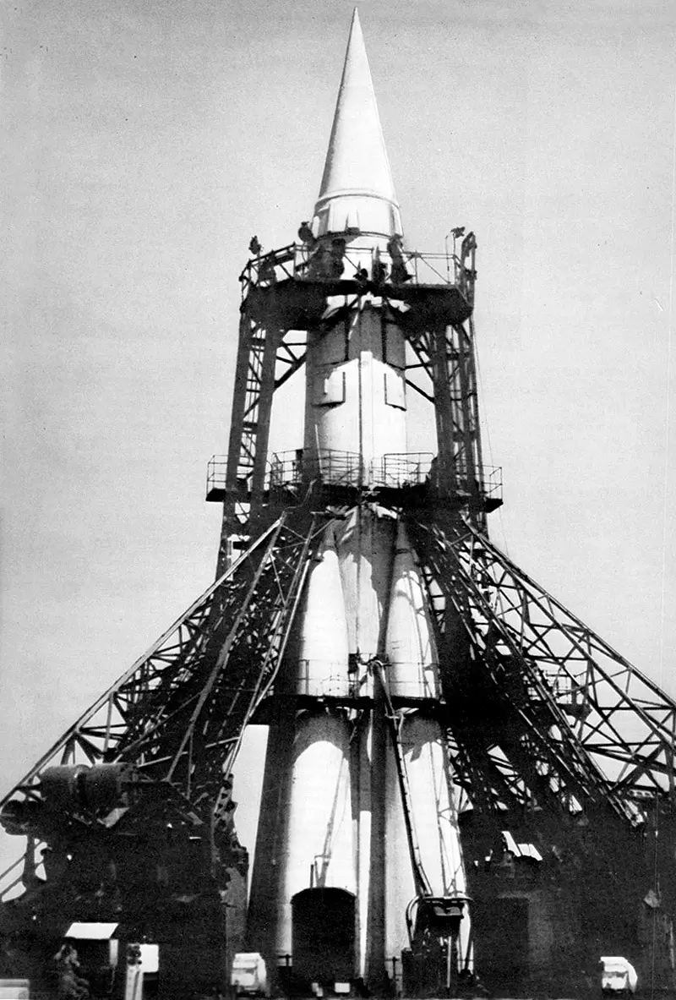

После Великой Отечественной войны советское руководство сделало ставку на ракетную технику как на главный инструмент обеспечения безопасности страны. 13 мая 1946 года вышло постановление Совета Министров СССР № 1017-419 «Вопросы реактивного вооружения», которое определило развитие отрасли на десятилетия вперёд. Этот день сами ракетчики считают официальным днём рождения отечественной ракетно-космической промышленности.
Всё началось с изучения трофейной немецкой техники. Ещё в 1945 году советские специалисты отправились на ракетный полигон Пенемюнде и заводы, где создавались знаменитые «Фау-2». Несмотря на то, что основные немецкие конструкторы во главе с Вернером фон Брауном оказались в США, советским инженерам удалось собрать достаточно материалов и деталей, чтобы воссоздать технологию. Уже в 1947–1948 годах на полигоне Капустин Яр начались испытания первых советских баллистических ракет.

Параллельно по всей стране разворачивалась новая промышленность. Головным стал НИИ-88 в Подлипках (ныне Королёв), где под руководством Сергея Королёва создавалось ОКБ-1 — будущее сердце советской космонавтики. В Химках начало работу двигателестроительное бюро ОКБ-456, которое возглавил Валентин Глушко. Именно там закладывались основы отечественного жидкостного двигателестроения. А в Куйбышеве (сегодня Самара) заработал завод № 1 — головное предприятие по серийному производству ракет, где к 1960 году выпускали уже по одной ракете Р-7 в неделю.
Первой советской баллистической ракетой стала Р-1 — по сути, точная копия немецкой «Фау-2». Её освоили не для копирования, а чтобы «почувствовать металл», наладить производство и подготовить инженерные кадры. Затем появилась Р-2 с дальностью 600 километров и отделяемой головной частью, а потом и Р-5, способная нести ядерный заряд. Параллельно шла работа над главным проектом — межконтинентальной ракетой Р-7, которой предстояло открыть человечеству дорогу в космос.
«Р-7 — это не просто ракета. Это символ эпохи, инженерный подвиг, совершённый вопреки всему. Она стала основой, на которой выросла вся отечественная космонавтика»
К середине 1950-х годов в Советском Союзе сложилась мощная ракетная промышленность, объединившая научные институты, конструкторские бюро и заводы по всей стране. Именно эта индустрия меньше чем через десять лет после разрушительной войны смогла создать ракету, способную вывести на орбиту первый искусственный спутник Земли. 4 октября 1957 года модифицированная Р-7 вывела на орбиту ПС-1, открыв космическую эру человечества